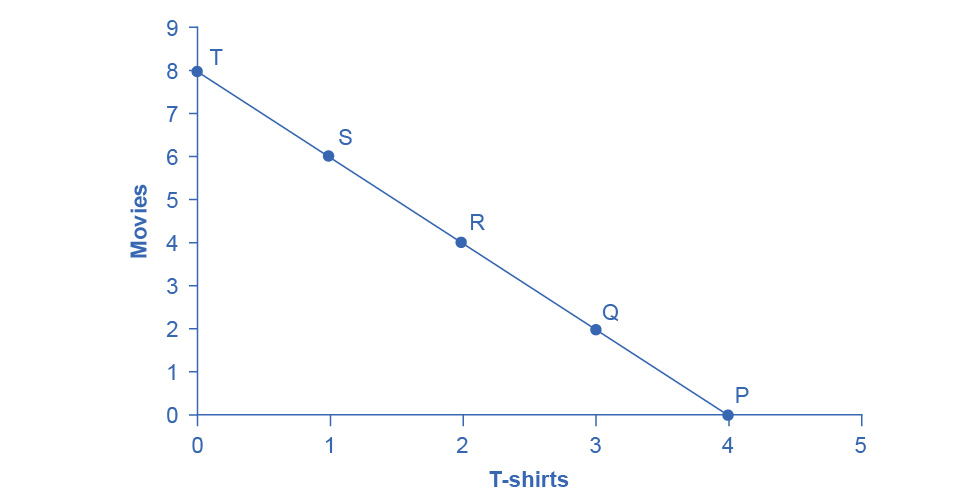

6.1 Consumption Choices
Learning Objectives
By the end of this section, you will be able to:
- Calculate total utility
- Propose decisions that maximize utility
- Explain marginal utility and the significance of diminishing marginal utility
Information on the consumption choices of Americans is available from the Consumer Expenditure Survey carried out by the U.S. Bureau of Labor Statistics. Table 6.1 shows spending patterns for the average U.S. household. The first row shows income and, after taxes and personal savings are subtracted, it shows that, in 2015, the average U.S. household spent $48,109 on consumption. The table then breaks down consumption into various categories. The average U.S. household spent roughly one-third of its consumption on shelter and other housing expenses, another one-third on food and vehicle expenses, and the rest on a variety of items, as shown. These patterns will vary for specific households by differing levels of family income, by geography, and by preferences.
Table 6.1 U.S. Consumption Choices in 2015 (Source: http://www.bls.gov/cex/csxann13.pdf)
Total Utility and Diminishing Marginal Utility
To understand how a household will make its choices, economists look at what consumers can afford, as shown in a budget constraint (or budget line), and the total utility or satisfaction derived from those choices. In a budget constraint line, the quantity of one good is on the horizontal axis and the quantity of the other good on the vertical axis. The budget constraint line shows the various combinations of two goods that are affordable given consumer income. Consider José's situation, shown in Figure 6.2. José likes to collect T-shirts and watch movies.
In Figure 6.2 we show the quantity of T-shirts on the horizontal axis while we show the quantity of movies on the vertical axis. If José had unlimited income or goods were free, then he could consume without limit. However, José, like all of us, faces a budget constraint. José has a total of $56 to spend. The price of T-shirts is $14 and the price of movies is $7. Notice that the vertical intercept of the budget constraint line is at eight movies and zero T-shirts ($56/$7=8). The horizontal intercept of the budget constraint is four, where José spends of all of his money on T-shirts and no movies ($56/14=4). The slope of the budget constraint line is rise/run or –8/4=–2. The specific choices along the budget constraint line show the combinations of affordable T-shirts and movies.

Figure 6.2 A Choice between Consumption Goods José has income of $56. Movies cost $7 and T-shirts cost $14. The points on the budget constraint line show the combinations of affordable movies and T-shirts.
José wishes to choose the combination that will provide him with the greatest utility, which is the term economists use to describe a person’s level of satisfaction or happiness with their choices.
Let’s begin with an assumption, which we will discuss in more detail later, that José can measure his own utility with something called utils. (It is important to note that you cannot make comparisons between the utils of individuals. If one person gets 20 utils from a cup of coffee and another gets 10 utils, this does not mean than the first person gets more enjoyment from the coffee than the other or that they enjoy the coffee twice as much. The reason why is that utils are subjective to an individual. The way one person measures utils is not the same as the way someone else does.) Table 6.2 shows how José’s utility is connected with his T-shirt or movie consumption. The first column of the table shows the quantity of T-shirts consumed. The second column shows the total utility, or total amount of satisfaction, that José receives from consuming that number of T-shirts. The most common pattern of total utility, in this example, is that consuming additional goods leads to greater total utility, but at a decreasing rate. The third column shows marginal utility, which is the additional utility provided by one additional unit of consumption. This equation for marginal utility is:

Notice that marginal utility diminishes as additional units are consumed, which means that each subsequent unit of a good consumed provides less additional utility. For example, the first T-shirt José picks is his favorite and it gives him an addition of 22 utils. The fourth T-shirt is just something to wear when all his other clothes are in the wash and yields only 18 additional utils. This is an example of the law of diminishing marginal utility, which holds that the additional utility decreases with each unit added. Diminishing marginal utility is another example of the more general law of diminishing returns we learned earlier in the chapter on Choice in a World of Scarcity.
The rest of Table 6.2 shows the quantity of movies that José attends, and his total and marginal utility from seeing each movie. Total utility follows the expected pattern: it increases as the number of movies that José watches rises. Marginal utility also follows the expected pattern: each additional movie brings a smaller gain in utility than the previous one. The first movie José attends is the one he wanted to see the most, and thus provides him with the highest level of utility or satisfaction. The fifth movie he attends is just to kill time. Notice that total utility is also the sum of the marginal utilities. Read the next Work It Out feature for instructions on how to calculate total utility.
Table 6.2 Total and Marginal Utility
Table 6.3 looks at each point on the budget constraint in Figure 6.2, and adds up José’s total utility for five possible combinations of T-shirts and movies.
Table 6.3 Finding the Choice with the Highest Utility
Work It Out
Calculating Total Utility
Let’s look at how José makes his decision in more detail.
Step 1. Observe that, at point Q (for example), José consumes three T-shirts and two movies.
Step 2. Look at Table 6.2. You can see from the fourth row/second column that three T-shirts are worth 63 utils. Similarly, the second row/fifth column shows that two movies are worth 31 utils.
Step 3. From this information, you can calculate that point Q has a total utility of 94 (63 + 31).
Step 4. You can repeat the same calculations for each point on Table 6.3, in which the total utility numbers are shown in the last column.
For José, the highest total utility for all possible combinations of goods occurs at point S, with a total utility of 103 from consuming one T-shirt and six movies.
Choosing with Marginal Utility
Most people approach their utility-maximizing combination of choices in a step-by-step way. This approach is based on looking at the tradeoffs, measured in terms of marginal utility, of consuming less of one good and more of another.
For example, say that José starts off thinking about spending all his money on T-shirts and choosing point P, which corresponds to four T-shirts and no movies, as Figure 6.2 illustrates. José chooses this starting point randomly as he has to start somewhere. Then he considers giving up the last T-shirt, the one that provides him the least marginal utility, and using the money he saves to buy two movies instead. Table 6.4 tracks the step-by-step series of decisions José needs to make (Key: T-shirts are $14, movies are $7, and income is $56). The following Work It Out feature explains how marginal utility can affect decision making.
Table 6.4 A Step-by-Step Approach to Maximizing Utility
Work It Out
Decision Making by Comparing Marginal Utility
José could use the following thought process (if he thought in utils) to make his decision regarding how many T-shirts and movies to purchase:
Step 1. From Table 6.2, José can see that the marginal utility of the fourth T-shirt is 18. If José gives up the fourth T-shirt, then he loses 18 utils.
Step 2. Giving up the fourth T-shirt, however, frees up $14 (the price of a T-shirt), allowing José to buy the first two movies (at $7 each).
Step 3. José knows that the marginal utility of the first movie is 16 and the marginal utility of the second movie is 15. Thus, if José moves from point P to point Q, he gives up 18 utils (from the T-shirt), but gains 31 utils (from the movies).
Step 4. Gaining 31 utils and losing 18 utils is a net gain of 13. This is just another way of saying that the total utility at Q (94 according to the last column in Table 6.3) is 13 more than the total utility at P (81).
Step 5. Thus, for José, it makes sense to give up the fourth T-shirt in order to buy two movies.
José clearly prefers point Q to point P. Now repeat this step-by-step process of decision making with marginal utilities. José thinks about giving up the third T-shirt and surrendering a marginal utility of 20, in exchange for purchasing two more movies that promise a combined marginal utility of 27. José prefers point R to point Q. What if José thinks about going beyond R to point S? Giving up the second T-shirt means a marginal utility loss of 21, and the marginal utility gain from the fifth and sixth movies would combine to make a marginal utility gain of 23, so José prefers point S to R.
However, if José seeks to go beyond point S to point T, he finds that the loss of marginal utility from giving up the first T-shirt is 22, while the marginal utility gain from the last two movies is only a total of 19. If José were to choose point T, his utility would fall to 100. Through these stages of thinking about marginal tradeoffs, José again concludes that S, with one T-shirt and six movies, is the choice that will provide him with the highest level of total utility. This step-by-step approach will reach the same conclusion regardless of José’s starting point.
We can develop a more systematic way of using this approach by focusing on satisfaction per dollar. If an item costing $5 yields 10 utils, then it’s worth 2 utils per dollar spent. Marginal utility per dollar is the amount of additional utility José receives divided by the product's price. Table 6.5 shows the marginal utility per dollar for José's T shirts and movies.

If José wants to maximize the utility he gets from his limited budget, he will always purchase the item with the greatest marginal utility per dollar of expenditure (assuming he can afford it with his remaining budget). José starts with no purchases. If he purchases a T-shirt, the marginal utility per dollar spent will be 1.6. If he purchases a movie, the marginal utility per dollar spent will be 2.3. Therefore, José’s first purchase will be the movie. Why? Because it gives him the highest marginal utility per dollar and is affordable. Next, José will purchase another movie. Why? Because the marginal utility of the next movie (2.14) is greater than the marginal utility of the next T-shirt (1.6). Note that when José has no T- shirts, the next one is the first one. José will continue to purchase the next good with the highest marginal utility per dollar until he exhausts his budget. He will continue purchasing movies because they give him a greater "bang for the buck" until the sixth movie which gives the same marginal utility per dollar as the first T-shirt purchase. José has just enough budget to purchase both. So in total, José will purchase six movies and one T-shirt.
Table 6.5 Marginal Utility per Dollar
A Rule for Maximizing Utility
This process of decision making suggests a rule to follow when maximizing utility. Since the price of T-shirts is twice as high as the price of movies, to maximize utility the last T-shirt that José chose needs to provide exactly twice the marginal utility (MU) of the last movie. If the last T-shirt provides less than twice the marginal utility of the last movie, then the T-shirt is providing less “bang for the buck” (i.e., marginal utility per dollar spent) than José would receive from spending the same money on movies. If this is so, José should trade the T-shirt for more movies to increase his total utility.
If the last T-shirt provides more than twice the marginal utility of the last movie, then the T-shirt is providing more “bang for the buck” or marginal utility per dollar, than if the money were spent on movies. As a result, José should buy more T-shirts. Notice that at José’s optimal choice of point S, the marginal utility from the first T-shirt, of 22 is exactly twice the marginal utility of the sixth movie, which is 11. At this choice, the marginal utility per dollar is the same for both goods. This is a tell-tale signal that José has found the point with highest total utility.
We can write this argument as a general rule: If you always choose the item with the greatest marginal utility per dollar spent, when your budget is exhausted, the utility maximizing choice should occur where the marginal utility per dollar spent is the same for both goods.

A sensible economizer will pay twice as much for something only if, in the marginal comparison, the item confers twice as much utility. Notice that the formula for the table above is:

The following Work It Out feature provides step by step guidance for this concept of utility-maximizing choices.
Work It Out
Maximizing Utility
The general rule, , means that the last dollar spent on each good provides exactly the same marginal utility. This is the case at point S. So:
Step 1. If we traded a dollar more of movies for a dollar more of T-shirts, the marginal utility gained from T-shirts would exactly offset the marginal utility lost from fewer movies. In other words, the net gain would be zero.
Step 2. Products, however, usually cost more than a dollar, so we cannot trade a dollar’s worth of movies. The best we can do is trade two movies for another T-shirt, since in this example T-shirts cost twice what a movie does.
Step 3. If we trade two movies for one T-shirt, we would end up at point R (two T-shirts and four movies).
Step 4. Choice 4 in Table 6.4 shows that if we move to point R, we would gain 21 utils from one more T-shirt, but lose 23 utils from two fewer movies, so we would end up with less total utility at point R.
In short, the general rule shows us the utility-maximizing choice, which is called the consumer equilibrium.
There is another equivalent way to think about this. We can also express the general rule as the ratio of the prices of the two goods should be equal to the ratio of the marginal utilities. When we divide the price of good 1 by the price of good 2, at the utility-maximizing point this will equal the marginal utility of good 1 divided by the marginal utility of good 2.

Along the budget constraint, the total price of the two goods remains the same, so the ratio of the prices does not change. However, the marginal utility of the two goods changes with the quantities consumed. At the optimal choice of one T-shirt and six movies, point S, the ratio of marginal utility to price for T-shirts (22:14) matches the ratio of marginal utility to price for movies (of 11:7).
Measuring Utility with Numbers
This discussion of utility began with an assumption that it is possible to place numerical values on utility, an assumption that may seem questionable. You can buy a thermometer for measuring temperature at the hardware store, but what store sells a “utilimometer” for measuring utility? While measuring utility with numbers is a convenient assumption to clarify the explanation, the key assumption is not that an outside party can measure utility but only that individuals can decide which of two alternatives they prefer.
To understand this point, think back to the step-by-step process of finding the choice with highest total utility by comparing the marginal utility you gain and lose from different choices along the budget constraint. As José compares each choice along his budget constraint to the previous choice, what matters is not the specific numbers that he places on his utility—or whether he uses any numbers at all—but only that he personally can identify which choices he prefers.
In this way, the step-by-step process of choosing the highest level of utility resembles rather closely how many people make consumption decisions. We think about what will make us the happiest. We think about what things cost. We think about buying a little more of one item and giving up a little of something else. We choose what provides us with the greatest level of satisfaction. The vocabulary of comparing the points along a budget constraint and total and marginal utility is just a set of tools for discussing this everyday process in a clear and specific manner. It is welcome news that specific utility numbers are not central to the argument, since a good utilimometer is hard to find. Do not worry—while we cannot measure utils, by the end of the next module, we will have transformed our analysis into something we can measure—demand.